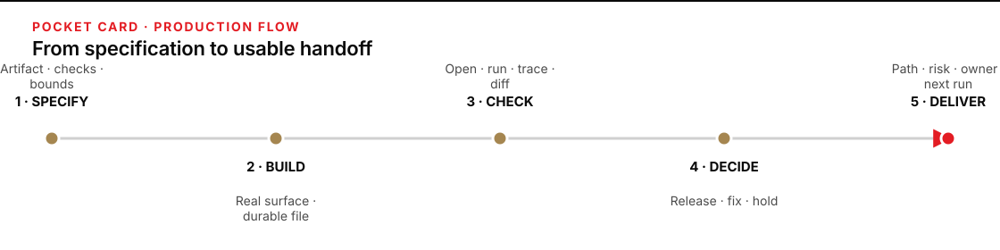

Specify, build, check, decide, deliver
Keep this beside the keyboard during consequential AI-assisted work. The module page carries the exact run. Open the production workflow reference when you need the reasoning behind a move.
| Move | Minimum content | Strong check | Stop or release signal |
|---|---|---|---|
| 1 · Specify | Artifact, audience, source boundary, acceptance checks, hand-back condition. | Requirements describe observable results, not activity. | Stop when scope, authority, or source conditions are unclear. |
| 2 · Build | A durable page, workflow, configuration, score sheet, policy, or report at a named path. | The artifact opens or runs in its real surface. | Stop before writing outside the agreed boundary. |
| 3 · Check | Evidence from opening, running, comparing, counting, tracing, scoring, or diffing. | Test the material failure mode with evidence outside model self-report. | A failed check creates a bounded fix or a hold. |
| 4 · Decide | RELEASE, FIX, or HOLD, tied to the acceptance checks. | The finding changes what happens next. | Unresolved material risk means HOLD. |
| 5 · Deliver | Artifact path, decision, strongest evidence, residual risk and owner, next run. | A cold reader can use the handoff without asking for the chat history. | Close only when the record matches the released artifact. |
Evidence standard: prefer a direct artifact check to another opinion. Use a fresh reviewer only when material judgment remains after the mechanical and source checks.

Figure transcript
One: Specify the artifact, audience, sources, acceptance checks, and stop condition. Two: Build the durable artifact in its real surface. Three: Check it by opening, running, comparing, counting, tracing, scoring, or diffing. Four: Decide release, fix, or hold from the evidence. Five: Deliver the path, decision, evidence, residual risk and owner, and next run.
A well-supported HOLD is a valid release decision. Record the evidence and next owner, then use the five-minute work-product closeout if the module calls for it.